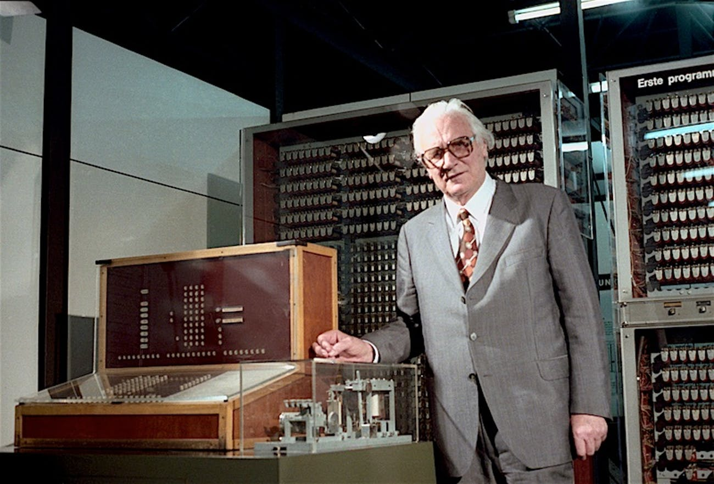

Informations sur le(s) créateur(s):
Konrad Zuse, né le 22 juin 1910 et décédé le 18 décembre 1995 est un ingénieur allemand qui fut l'un des pionniers du calcul programmable qui préfigure l'informatique.
Informations sur la machine:
Le Z3 était un calculateur à relais électromécaniques conçu par l'ingénieur allemand Konrad Zuse. Ce calculateur était la première machine programmable pleinement automatique ce qui en ferait le premier ordinateur du monde. Il était composé de 2 000 relais électromécaniques, fonctionnait à une fréquence d'horloge de 5 à 10 Hz et exploitait des mots d'une longueur de 22 bits. Le code et les données étaient stockés sur des rubans perforés en celluloïd.